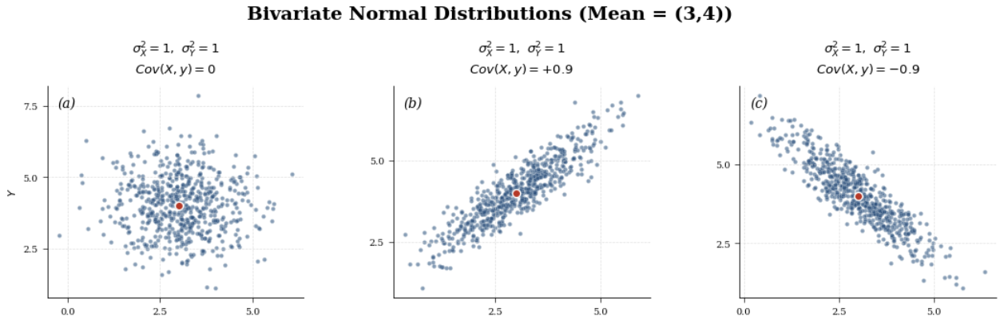
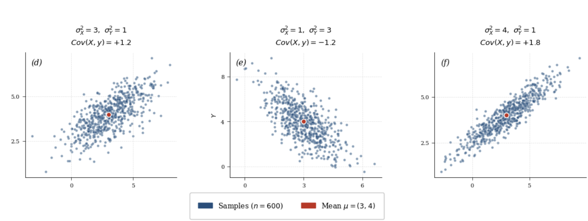

1. Probability Density Function - Geometric PerspectiveWe have already seen what a PDF is, in the recap of Probability. In this section, we shall see the geometric perspective of it.Let X be a continuous random variable with fX as its PDF. For a sufficiently small value Δx>0, we would like to compute the following.P(x⩽X⩽x+Δx)We would like to find the probability of X taking a value between x and x+Δx. Here is the usual way,x+Δx∫xfX(x) dxBasically, the probability that we wish to compute is the area under the curve fX(x) between the interval [x,x+Δx]. Since Δx is small, this region can be approximated by a rectangle.fX(x)xx+ΔxFor small Δx, we can approximate the probability as followsP(x⩽X⩽x+Δx)≈fX(x)·ΔxThe height of the rectangle is fX(x) and the width of the rectangle is Δx.Similarly, if P and Q are two continuous random variables with fPQ(p,q) as the joint PDF, then for sufficiently small Δp>0 and Δq>0P(p⩽P⩽p+Δp,q⩽Q⩽q+Δq)≈fPQ(p,q)·Δp·ΔqHere, the probability is approximately equal to the volume of a thin cuboid whose length is Δp, width is Δq and height is fPQ(p,q).
2. Area & DeterminantVectors u and v are given as follows.u=a
3
0
, v=a
1
2
Let the vertices of a parallelogram be (0,0), u, v and u+vThe are of the paralleogram isBase×HeightIn the given paralleogram, the height is 2, and the base length is 3. Therefore, the area is 6 units.Consider the following matrixA=a
|
|
u
v
|
|
=a
3
1
0
2
The absolute value of the determinant of A is also 6|det(A)|=6If we interchange the column, the absolute value of the deteminant remains the sameadet(a
1
3
2
0
)a=6Given two vectors u,v∈R2, the area of the parallelogram with vertices (0,0),u,v and u+v is the absolute value of the determinant of the 2×2 matrix that has u and v as its column vectors.
3. Jacobian MatrixSuppose, f:Rd→Rkf(x1,...,xd)=a
g1(x1,...,xd)
⋮
gk(x1,...,xd)
Here, gi:Rd→R, ∀i∈{1,...,k}The Jacobian of f is given as follows.Jf(x,y,z)=a
∇g1(x1,...,xd)T
⋮
∇gk(x1,...,xd)T
∇gi(x,y,z) is assumed to be a column vector ∀i∈{1,...,k}.EXAMPLEf(x,y,z)=a
x+y+z
x2+y2+z2
The Jacobian is given as follows.Jf(x,y,z)=a
1
1
1
2x
2y
2z
4. ParalleogramWe will state and prove two facts about parallelogram, which we will use in a later section.Part 1Suppose, there are three vectors a,b,c∈R2, then the quadrilateral joining the following points form a parallelogram.a, a+b, a+c, a+b+cNOTE : Here, the following points should be adjacent.• a and a+b• a and a+c• a+b and a+b+c• a+c and a+b+cThe following points should be opposite to each other• a+b and a+c• a and a+b+cProof :Let us find the squared length of the the sides.• a and a+b
||(a+b)-(a)||2
=bTb
• a and a+c
||(a+c)-(a)||2
=cTc
• a+b and a+b+c
||(a+b+c)-(a+b)||2
=cTc
• a+c and a+b+c
||(a+b+c)-(a+c)||2
=bTb
The side joing the vertices a and a+b and the side joining the vertices a+c and a+b+c are the opposite sides of the quadrilateral. The squared length of both the sides is bTbSimilarly, the side joining the vertices a and a+c and the side joining the vertices a+b and a+b+c are the opposite sides of the quadrilateral. The squared length of both the sides is cTcIf the length of the opposite sides of a quadrilateral are equal, then the quadrilateral is a parallelogram.Part 2Consider two vectors p and q where, for some 𝛽∈[0,1] and some 𝜆∈[0,1]p=𝛽bq=𝜆cTo Prove : The point a+p+q lies within the parallelogram formed in Part 1Proof : Here is a geometric proof.baqcpa+pa+qa+ba+ca+b+ca+p+qWe have made use of the parallelogram law of addition. Clearly, a+p+q lies with the red parallelogram.
5. Functions of Random Variable - DiscreteX is a random variable with T as its range and fX as its PMF. Consider a function g:T→R. ThenY=g(X)can be seen as a composition of two functions.• X:S→T, where S is a the sample space• g:T→R• Therefore, Y:S→R is a random variable.Here is a way to find the PMF of Y. Let A={t∈T|g(t)=y}
fY(y)
=P(Y=y)
=P(g(X)=y)
=P(X∈A)
=∑t∈AfX(t)
EXAMPLELet X be a random variable with T={-2,-1,0,1,2} as its range. The PMF of X is given as follows.
fX(-2)
=0.3
fX(-1)
=0.1
fX(0)
=0.2
fX(1)
=0.25
fX(2)
=0.15
Find the PMF of Y, where Y=g(X)=X2.For each element in t∈T, let us find g(t)
g(-2)
=4
g(-1)
=1
g(0)
=0
g(1)
=1
g(2)
=4
Y can take the following values :{0,1,4}• {t∈Tag(t)=0}={0}• {t∈Tag(t)=1}={-1,1}• {t∈Tag(t)=4}={-2,2}
fY(0)
=P(Y=0)
=P(g(X)=0)
=P({0})
=0.2
fY(1)
=P(Y=1)
=P(g(X)=1)
=P({-1,1})
=0.35
fY(4)
=P(Y=4)
=P(g(X)=4)
=P({-2,2})
=0.45
Sum of Two Random VariablesX and Y are two discrete random variables with fXY as their joint PMF and TX and TY as their corresponding range sets. Random variable Z is given as followsZ=X+YThe PMF of Z is given as follows
fZ(z)
=P(Z=z)
=P(X+Y=z)
=∑t∈TXP(X=t,Y=z-t)
=∑t∈TXfXY(t,z-t)
If X and Y are independent, thenfZ(z)=∑t∈TXfX(t)·fY(z-t)This is called the convolution operation.EXAMPLE X ~ Poisson(𝜆1) and Y ~ Poission(𝜆2). X and Y are independent. Find the PMF of Z=X+YThe range of X is {0,1,2,...}
fZ(z)
=∞∑t=0fX(t)·fY(z-t)
=∞∑t=0e-𝜆1𝜆t1
t!×e-𝜆2𝜆z-t2
(z-t)!
=∞∑t=0e-(𝜆1+𝜆2)·𝜆t1·𝜆z-t2
t!·(z-t)!
=e-(𝜆1+𝜆2)∞∑t=0𝜆t1·𝜆z-t2
t!·(z-t)!
=e-(𝜆1+𝜆2)
z!∞∑t=0z!·𝜆t1·𝜆z-t2
t!·(z-t)!
=e-(𝜆1+𝜆2)
z!∞∑t=0a
z
t
·𝜆t1·𝜆z-t2
=e-(𝜆1+𝜆2)·(𝜆1+𝜆2)z
z!
Here, we have used the binomial theormz∑t=0a
z
t
·𝜆t1·𝜆z-t2=(𝜆1+𝜆2)zwhere, a
z
t
=z!
t!(z-t)!Hence, Z ~ Poisson(𝜆1+𝜆2)Minimum of Two Random VariablesX and Y are two discrete random variables with joint PMF fXY, FX and FY as their corresponding CDF and TX and TY as their corresponding range sets. Z=min(X,Y)Find the PMF and CDF of ZPMF of Z
Maximum of Two Random VariablesX and Y are two discrete random variables with joint PDF fXY, FX and FY as their corresponding CDF and TX and TY as their corresponding range sets. Z=max(X,Y)Find the PDF and CDF of ZPMF of Z
ExpectationX is a discrete random variable with fX as its PMF and TX as its range. Then,E[g(X)]=∑x∈TXg(x)·fX(x)
6. Functions of Random Variable - ContinuousX is a continuous random variable with CDF FX and PDF fX. Suppose, Y=g(X). Here, g should be a reasonable function. The precise meaning of a reasonable function is beyond the scope of this course. For the purposes of this course, any function we encounter is considered reasonable.Let A={x|g(x)⩽y}. The CDF of Y is given as followsa
FY(y)
=P(Y⩽y)
=P(g(X)⩽y)
=P(X∈A)
First, we shall convert the set A into disjoint intervals.A=[a1,b1]∪...∪[an,bn]Then,
FY(y)
=P(X∈A)
=P(a1⩽X⩽b1)+...+P(an⩽X⩽bn)
=n∑i=1bi∫aifX(x) dx
EXAMPLEConsider X ~ Exponential(𝜆). Find the CDF of Y=g(X)=X2Let y⩾0 and let A={x|g(x)⩽y}
A
={x|g(x)⩽y)
={x|x2⩽y}
=[0,y]
FY(y)
=y∫0𝜆e-𝜆x dx
=𝜆y∫0e-𝜆x dx
=𝜆[e-𝜆x
-𝜆]y0
=𝜆[e-𝜆y-1
-𝜆]
=1-e-𝜆y
Sum of Two Random VariablesX and Y are two continuous random variables with fXY as their joint PDF. Random variable Z is given as followsZ=X+YThe PDF of Z is given as follows
fZ(z)
=∞∫-∞fXY(x,z-x) dx
If X and Y are independent, thenfZ(z)=∞∫-∞fX(x)·fY(z-x) dxThis is called the convolution operation.Minimum of Two Random VariablesX and Y are two continuous random variables with joint PDF fXY. Let FX and FY be their corresponding CDFs. Z=min(X,Y). Find the CDF of ZCDF of Z
FZ(z)
=P(Z⩽z)
=P(min(X,Y)⩽z)
=1-P(min(X,Y)>z)
=1-P(X>z,Y>z)
=1-∞∫z∞∫zfXY(x,y) dy dx
If X and Y are independent, thena
FZ(z)
=1-P(X>z,Y>z)
=1-(P(X>z)·P(Y>z))
=1-(1-P(X⩽z))·(1-P(Y⩽z))
=1-(1-FX(x))·(1-FY(y))
Maximum of Two Random VariablesX and Y are two continuous random variables with joint PDF fXY. Let FX and FY be their corresponding CDFs. Z=max(X,Y). Find the CDF of ZCDF of Z
FZ(z)
=P(Z⩽z)
=P(max(X,Y)⩽z)
=P(X⩽z,Y⩽z)
=z∫-∞z∫-∞fXY(x,y) dy dx
If X and Y are independent, thena
FZ(z)
=P(X⩽z,Y⩽z)
=P(X⩽z)·P(Y⩽z)
=FX(z)·FY(z)
ExpectationX is a continuous random variable with fX as its PDF. Then,E[g(X)]=∞∫-∞g(x)·fX(x) dx
7. Transformation of Random Variables (one variable)Part 1 Let X be a continuous random variable with fX as its PDF. The random variable Y is given as followsY=g(X)where, g is a differentiable, invertible & strictly increasing function. That is,X=g-1(Y)and for all x1 and x2 in the domain of g, if x1<x2g(x1)<g(x2)Also, for all x in the domain of g, g'(x)>0GOAL : To find fY, which is the PDF of Y.For a sufficiently small Δx>0,P(x⩽X⩽x+Δx)≈fX(x)·Δxy=g(x)y+Δy=g(x+Δx)Here, Δy is need not be equal to Δx. The quantity Δy denotes the change in y corresponding to change in x.Consider the derivative of g(x)g'(x)=limΔx→0g(x+Δx)-g(x)
ΔxSince g(x+Δx)=y+Δy and g(x)=y, we getg'(x)=limΔx→0Δy
ΔxAs Δx→0Δy
Δx→g'(x)Therefore, for sufficiently small Δx,Δy≈g'(x)·ΔxAs Δx→0• x+Δx→x• g(x+Δx)→g(x)• y+Δy→y• Δy=(y+Δy)-y→0Since g is an increasing function, g(x)<g(x+Δx). Therefore, Δy=g(x+Δx)-g(x) is positive. Therefore,P(y⩽Y⩽y+Δy)≈fY(y)·ΔyClaimP(y⩽Y⩽y+Δy)=P(x⩽X⩽x+Δx)Proof :Consider the eventy⩽Y⩽y+ΔySubstitute Y=g(X)y⩽g(X)⩽y+ΔySince y=g(x) and y+Δy=g(x+Δx), we getg(x)⩽g(X)⩽g(x+Δx)Since g is invertible and stricly increasingg(x)⩽g(X)⩽g(x+Δx)impliesx⩽X⩽x+ΔxFor all x∈[x,x+Δx], g(x)∈ag(x),g(x+Δx)a. Therefore,P(y⩽Y⩽y+Δy)=P(x⩽X⩽x+Δx)Recall Δy≈g'(x)·Δx
P(y⩽Y⩽y+Δy)
=P(x⩽X⩽x+Δx)
fy(y)·Δy
=fX(x)·Δx
fy(y)·g'(x)·Δx
=fX(x)·Δx
fy(y)
=fX(x)
g'(x)
Part 2Let X be a continuous random variable with fX as its PDF. The random variable Y is given as followsY=g(X)where, g is a differentiable, invertible & strictly decreasing function. That is,X=g-1(Y)and for all x1 and x2 in the domain of g, if x1<x2g(x1)>g(x2)Also, for all x in the domain of g, g'(x)<0GOAL : To find fY, which is the PDF of Y.For a sufficiently small Δx>0,P(x⩽X⩽x+Δx)≈fX(x)·Δxy=g(x)y+Δy=g(x+Δx)Here, Δy is need not be equal to Δx. The quantity Δy denotes the change in y corresponding to change in x.Consider the derivative of g(x)g'(x)=limΔx→0g(x+Δx)-g(x)
ΔxSince g(x+Δx)=y+Δy and g(x)=y, we getg'(x)=limΔx→0Δy
ΔxAs Δx→0Δy
Δx→g'(x)Therefore, for sufficiently small Δx,Δy≈g'(x)·ΔxAs Δx→0• x+Δx→x• g(x+Δx)→g(x)• y+Δy→y• Δy=(y+Δy)-y→0Since g is an decreasing function, g(x)>g(x+Δx). Therefore, Δy=g(x+Δx)-g(x) is negative. The derivative of g(x) is also negative. Therefore, for sufficiently small Δx,|Δy|≈|g'(x)|·ΔxProbability is between 0 and 1. Therefore,P(y+Δy⩽Y⩽y)≈fY(y)·|Δy|ClaimP(y+Δy⩽Y⩽y)=P(x⩽X⩽x+Δx)Proof :Consider the eventy+Δy⩽Y⩽ySubstitute Y=g(X)y+Δy⩽g(x)⩽ySince y=g(x) and y+Δy=g(x+Δx), we getg(x+Δx)⩽g(X)⩽g(x)Since g is invertible and stricly decreasingg(x+Δx)⩽g(X)⩽g(x)impliesx⩽X⩽x+ΔxFor all x∈[x,x+Δx], g(x)∈ag(x+Δx),g(x)a. Therefore,P(y+Δy⩽Y⩽y)=P(x⩽X⩽x+Δx)Recall |Δy|≈|g'(x)|·Δx.
P(y+Δy⩽Y⩽y)
=P(x⩽X⩽x+Δx)
fy(y)·||Δy||
=fX(x)·Δx
fy(y)·||g'(x)||·Δx
=fX(x)·Δx
fy(y)
=fX(x)
||g'(x)||
Part 3Part 1 result
fy(y)
=fX(x)
g'(x)
Since g'(x)>0, we have g'(x)=|g'(x)|. Therefore,
fy(y)
=fX(x)
||g'(x)||
Part 2 result
fy(y)
=fX(x)
||g'(x)||
Combining both,
fy(y)
=fX(x)
||g'(x)||
Since x=g-1(y)
fy(y)
=fX(g-1(y))
|g'(g-1(y))|
The result holds when g is differentiable and strictly monotonic (hence invertible), with g'(x)≠0
8. Transformation of Random Variables (two variable)Consider the following probability space⟨S,F,P⟩where,• S - Sample Space• F - Event Space• P - Probability FunctionX and Y are two continuous random variables defined on the above probability space with fXY as their joint PDF. The random variables P and Q are defined as follows
U
=g(X,Y)
V
=h(X,Y)
Also, there exist two functions m and n such thata
X
=m(U,V)
Y
=n(U,V)
We have a one-to-one mapping between (X,Y) and (U,V)Goal : To find the joint distribution fUVLet Δx and Δy be real numbers. Let (x,y) be in the domain of fXY. The region R=[x,x+Δx]×[y,y+Δy]forms a rectangle. For sufficiently small Δx>0 and Δy>0, the probability of (X,Y) being inside the region R is the volume of the thin cuboid, with length as Δx, width as Δy and height as fXY(x,y) isP((X,Y)∈R)=P(x⩽X⩽x+Δx,y⩽Y⩽y+Δy)≈fXY(x,y)·Δx·ΔyThe vertices of the rectangular region R are(x,y),(x+Δx,y),(x,y+Δy),(x+Δx,y+Δy)Let us find the mapping of these points, using the functions g and h⟹(x,y)
g(x,y)
=u
h(x,y)
=v
(x,y) maps to some (u,v) in the domain of fUV⟹(x+Δx,y)By first order Taylor series approximation,
g(x+Δx,y)
≈g(x,y)+(𝛿g
𝛿x(x,y),𝛿g
𝛿y(x,y))·(Δx,0)
≈u+𝛿g
𝛿x(x,y)·Δx
h(x+Δx,y)
≈h(x,y)+(𝛿h
𝛿x(x,y),𝛿h
𝛿y(x,y))·(Δx,0)
≈v+𝛿h
𝛿x(x,y)·Δx
(x+Δx,y) maps to (u+𝛿g
𝛿x(x,y)·Δx,v+𝛿h
𝛿x(x,y)·Δx)⟹(x,y+Δy)By first order Taylor series approximation,
g(x,y+Δy)
≈g(x,y)+(𝛿g
𝛿x(x,y),𝛿g
𝛿y(x,y))·(0,Δy)
≈u+𝛿g
𝛿y(x,y)·Δy
h(x,y+Δy)
≈h(x,y)+(𝛿h
𝛿x(x,y),𝛿h
𝛿y(x,y))·(0,Δy)
≈v+𝛿h
𝛿y(x,y)·Δy
(x+Δx,y) maps to (u+𝛿g
𝛿y(x,y)·Δy,v+𝛿h
𝛿y(x,y)·Δy)⟹(x+Δx,y+Δy)By first order Taylor series approximation,
g(x+Δx,y+Δy)
≈g(x,y)+(𝛿g
𝛿x(x,y),𝛿g
𝛿y(x,y))·(Δx,Δy)
≈u+𝛿g
𝛿x(x,y)·Δx+𝛿g
𝛿y(x,y)·Δy
h(x+Δx,y+Δy)
≈h(x,y)+(𝛿h
𝛿x(x,y),𝛿h
𝛿y(x,y))·(Δx,Δy)
≈v+𝛿h
𝛿x(x,y)·Δx+𝛿h
𝛿y(x,y)·Δy
(x+Δx,y+Δy) maps to (u+𝛿g
𝛿x(x,y)·Δx+𝛿g
𝛿y(x,y)·Δy,v+𝛿h
𝛿x(x,y)·Δx+𝛿h
𝛿y(x,y)·Δy)Let us define a, b and c as follows
a
=(u,v)
b
=(𝛿g
𝛿x(x,y)·Δx,𝛿h
𝛿x(x,y)·Δx)
c
=(𝛿g
𝛿y(x,y)·Δy,𝛿h
𝛿y(x,y)·Δy)
Therefore,• (x,y) maps to (u,v), which is a• (x+Δx,y) maps to (u+𝛿g
𝛿x(x,y)·Δx,v+𝛿h
𝛿x(x,y)·Δx), which is a+b• (x,y+Δy) maps to (u+𝛿g
𝛿y(x,y)·Δy,v+𝛿h
𝛿y(x,y)·Δy), which is a+c• (x+Δx,y+Δy) maps to (u+𝛿g
𝛿x(x,y)·Δx+𝛿g
𝛿y(x,y)·Δy,v+𝛿h
𝛿x(x,y)·Δx+𝛿h
𝛿y(x,y)·Δy)• which is a+b+cClearly, the quadrilateral connecting a, a+b, a+c and a+b+c is a parallelogram. Let us call this region is Z.For sufficiently small Δx and Δy the following are be close to 0
𝛿g
𝛿x(x,y)·Δx
𝛿g
𝛿y(x,y)·Δy
𝛿h
𝛿x(x,y)·Δx
𝛿h
𝛿y(x,y)·Δy
As a result, for sufficiently small Δx and Δy, the vectors b and c are close to (0,0). ThereforeP((U,V)∈Z)≈fUV(u,v)·Area(Z)Claim :P((U,V)∈Z)=P((X,Y)∈R)Proof : We are going to prove this by showing that any point in the region R is always mapped to a point in region Z and vice-versa.Let 𝛽∈[0,Δx] and 𝜆∈[0,Δy]. The point (x+𝛽,y+𝜆) in in region R. Let us find the mapping of (x+𝛽,y+𝜆) using g and h. By first order Taylor series approximation
g(x+𝛽,y+𝜆)
≈g(x,y)+(𝛿g
𝛿x(x,y),𝛿g
𝛿y(x,y))·(𝛽,𝜆)
≈u+𝛿g
𝛿x(x,y)·𝛽+𝛿g
𝛿y(x,y)·𝜆
h(x+𝛽,y+𝜆)
≈h(x,y)+(𝛿h
𝛿x(x,y),𝛿h
𝛿y(x,y))·(𝛽,𝜆)
≈v+𝛿h
𝛿x(x,y)·𝛽+𝛿h
𝛿y(x,y)·𝜆
The point (x+𝛽,y+𝜆) maps to(u+𝛿g
𝛿x(x,y)·𝛽+𝛿g
𝛿y(x,y)·𝜆,v+𝛿h
𝛿x(x,y)·𝛽+𝛿h
𝛿y(x,y)·𝜆)This can be rewritten as follows(u,v)+(𝛿g
𝛿x(x,y)·𝛽,𝛿h
𝛿x(x,y)·𝛽)+(𝛿g
𝛿y(x,y)·𝜆,𝛿h
𝛿y(x,y)·𝜆)Recall, b=(𝛿g
𝛿x(x,y)·Δx,𝛿h
𝛿x(x,y)·Δx)
(𝛿g
𝛿x(x,y)·𝛽,𝛿h
𝛿x(x,y)·𝛽)
=(𝛽
Δx)(𝛿g
𝛿x(x,y)·Δx,𝛿h
𝛿x(x,y)·Δx)
Since 𝛽∈[0,Δx], the scalar 𝛽
Δx∈[0,1]Recall, c=(𝛿g
𝛿y(x,y)·Δy,𝛿h
𝛿y(x,y)·Δy)
(𝛿g
𝛿y(x,y)·𝜆,𝛿h
𝛿y(x,y)·𝜆)
=(𝜆
Δy)(𝛿g
𝛿y(x,y)·Δy,𝛿h
𝛿y(x,y)·Δy)
Since 𝜆∈[0,Δy], the scalar 𝜆
Δy∈[0,1]Therefore, the point (u,v)+(𝛿g
𝛿x(x,y)·𝛽,𝛿h
𝛿x(x,y)·𝛽)+(𝛿g
𝛿y(x,y)·𝜆,𝛿h
𝛿y(x,y)·𝜆) lies inside the region Z.Since we have a one-to-one mapping between (X,Y) and (U,V), using the function m and n, the point (u,v)+(𝛿g
𝛿x(x,y)·𝛽,𝛿h
𝛿x(x,y)·𝛽)+(𝛿g
𝛿y(x,y)·𝜆,𝛿h
𝛿y(x,y)·𝜆) maps to (x+𝛽,y+𝜆).Every point in region R maps to a point in region Z and vice-versa. The set of all the outcomes in the sample space S that are mapped to the region R is given as follows.A={𝜔∈S|(X(𝜔),Y(𝜔))∈R}The set of all the outcomes in the sample space S that are mapped to the region Z is given as follows.B={𝜔∈S|(U(𝜔),V(𝜔))∈Z}Every point in R maps to Z and every point in Z maps to R, the above sets are equal.• If 𝜔∈A, then 𝜔∈B• If 𝜔∈B, then 𝜔∈ATherefore,{𝜔|(X(𝜔),Y(𝜔))∈R}={𝜔|(U(𝜔),V(𝜔))∈Z}The above sets are subsets of sample space, and are therefore, the elements of F. Every element of F is an event.Hence,P((U,V)∈Z)=P((X,Y)∈R)Let us substitute the following in the above equality.• P((X<Y)∈R)≈fXY(x,y)·Δx·Δy• P((U,V)∈Z)≈fUV(u,v)·Area(Z)
P((U,V)∈Z)
=P((X<Y)∈R)
fUV(u,v)·Area(Z)
=fXY(x,y)·Δx·Δy
fUV(u,v)
=fXY(x,y)·Δx·Δy
Area(Z)
We have to find the area of the region Z. The vertices of the parallelogram (Z) are,a, a+b, a+c, a+b+c The area of the above parallelogram is equal to the area of the parallelogram with the following vertices(0,0), b, c, b+cWe have subtracted a from every vertex. Subtracting a from every vertex, moves the parallelogram along the R2 plane. It does not change the shape of the parallelogram.bcb+c(0,0)We have seen that the area of the above parallelogram is given as the absolute value of the determinant of the following matrix.a
|
|
b
c
|
|
=a
𝛿g
𝛿x(x,y)·Δx
𝛿g
𝛿y(x,y)·Δy
𝛿h
𝛿x(x,y)·Δx
𝛿h
𝛿y(x,y)·Δy
We will make use of the following property of determinant.det(a
at
c
bt
d
)=t·det(a
a
c
b
d
)det(a
𝛿g
𝛿x(x,y)·Δx
𝛿g
𝛿y(x,y)·Δy
𝛿h
𝛿x(x,y)·Δx
𝛿h
𝛿y(x,y)·Δy
)=det(a
𝛿g
𝛿x(x,y)
𝛿g
𝛿y(x,y)
𝛿h
𝛿x(x,y)
𝛿h
𝛿y(x,y)
)·Δx·ΔyThe following is the Jacobian matrix.J=a
𝛿g
𝛿x(x,y)
𝛿g
𝛿y(x,y)
𝛿h
𝛿x(x,y)
𝛿h
𝛿y(x,y)
Therefore,Area(Z)=|det(J)·Δx·Δy|Since Δx>0 and Δy>0,Area(Z)=|det(J)|·Δx·ΔyRecall X=m(U,V) and Y=n(U,v)
fUV(u,v)
a=fXY(x,y)·Δx·Δy
Area(Z)
a=fXY(m(u,v),n(u,v))·Δx·Δy
|det(J)|·Δx·Δy
=fXY(m(u,v),n(u,v))
|det(J)|
9. Bivariate Gaussian DistributionSuppose, X ~ N(0,1) and Y ~ N(0,1) are two independent random variables. The random variables U and V are defined as followsa
U
=g(X,Y)=𝛼1X+𝛼1Y
V
=h(X,Y)=𝛽1X+𝛽2Y
U and V can also be expressed as follows.a
U
V
=a
𝛼1
𝛼2
𝛽1
𝛽2
a
X
Y
Let A=a
𝛼1
𝛼2
𝛽1
𝛽2
.Let us find the fXY(x,y). Since X and Y are independent,
fXY(x,y)
=fX(x)·fY(y)
=1
2𝜋e-x2
2·1
2𝜋e-y2
2
=1
2𝜋e-(x2+y2)
2
Goal : To find fUV. If A is invertible, then we can find fUVA-1 is given as followsA-1=1
𝛼1𝛽2-𝛼2𝛽1a
𝛽2
-𝛼2
-𝛽1
𝛼1
From U and V, we can get X and Y as followsa
X
Y
=A-1UThe Jacobian matrix J is given as followsJ=a
―
∇g(X,Y)
―
―
∇h(X,Y)
―
=a
𝛼1
𝛼2
𝛽1
𝛽2
fUV is given as follows
fUV(u,v)
=fXY(A-1·a
u
v
)
|det(J)|
x2+y2=aaa
x
y
aa2=aaA-1·a
u
v
aa2=a
u
v
(A-1)T(A-1)a
u
v
.
(A-1)T(A-1)
=(AT)-1(A)-1
=(AAT)-1
We have made use of the following facts.• (ZT)-1=(Z-1)T• (WZ)-1=Z-1W-1
fUV(u,v)
a=1
2𝜋e-(a
u
v
(ATA)-1a
u
v
)
2
|det(J)|
=1
2𝜋·|det(J)|e-a
u
v
(AAT)-1a
u
v
2
Let us find the expected value and variance of U and V
E[U]
=E[𝛼1X+𝛼2Y]
=𝛼1E[X]+𝛼2E[Y]
=0
E[V]
=E[𝛽1X+𝛽2Y]
=𝛽1E[X]+𝛽2E[Y]
=0
Var(U)
=E[U2]-(E[U])2
=E[𝛼21X2+2𝛼1𝛼2XY+𝛼22Y2]
=𝛼21E[X2]+𝛼22E[Y2]
=𝛼21+𝛼22
Similarly, Var[V]=𝛽21+𝛽22• Since X and Y are independent, E[XY]=E[X]·E[Y]=0• E[X2]=Var(X)+(E[X])2=1• Similarly, E[Y2]=1Let us find the covariance of U and V
We have used the followins facts• Cov(X,X)=Var(X)• Cov(P,aQ+bR)=aCov(P,Q)+bCov(P,R)• Cov(X,Y)=0 as X and Y are independent.Let us find AAT
AAT
=(a
𝛼1
𝛼2
𝛽1
𝛽2
×a
𝛼1
𝛽1
𝛼2
𝛽2
)
=a
𝛼21+𝛼22
𝛼1𝛽1+𝛼2𝛽2
𝛼1𝛽1+𝛼2𝛽2
𝛽21+𝛽22
=a
Var(U)
Cov(U,V)
Cov(U,V)
Var(V)
AAT is the covariance matrix.Let us find the determinant of the Jacobian matrix
det(a
𝛼1
𝛼2
𝛽1
𝛽2
)
=𝛼1𝛽2-𝛼2𝛽1
Note that the Jacobian matrix is the same as matrix A. Therefore,det(J)=det(A)=(det(A))2=det(A)×det(AT)=det(AAT)The determinant of the Jacobian matrix is the square root of the determinant of the covariance matrix.
10. Multivariate Gaussian DistributionConsider the following random vector.X=a
X1
X2
⋮
Xn
X ~ N(𝜇,𝛴), where 𝜇∈Rn and 𝛴 is a n×n covariance matrix.𝛴=a
Var(X1)
Cov(X1,X2)
⋯
Cov(X1,Xn)
Cov(X2,X1)
Var(X2)
⋯
Cov(X2,Xn)
⋮
⋮
⋱
⋮
Cov(Xn,X1)
Cov(Xn,X2)
⋯
Var(Xn)
The PDF of X, given by fX(x) is the joint distribution of X1,...,Xn, which is given as followsfX1,...,Xn(x1,...,xn)=fX(x)=1
(2𝜋)n/2|det(𝛴)|e-(x-𝜇)T𝛴-1(x-𝜇)
2Here, x=[x1,...,xn]T and (x-𝜇) is a column vectorCompare this to the PDF of univariate Gaussian.1
2𝜋𝜎e-(x-𝜇)2
2𝜎2• 𝜎2 is in the denominator of -(x-𝜇)2
2𝜎2. Therefore, (𝜎2)-1 will be in the numerator. Compare this to the 𝛴-1 in the multivariate Gaussian distribution• In univariate Gaussian, we have (x-𝜇)2. In multivariate Gaussian, we have (x-𝜇)T𝛴-1(x-𝜇)• In univariate Gaussian, we have 𝜎 in the denominator of the PDF. Compare this to |det(𝛴)| in the denominator of the PDF of the multivariate Gaussian.
11. Bivariate Gaussian (Plot)


Readers are requested to have a look at the above plot and see the impact of variance and covariance on the generated samples. To understand the variance, have a look at the range of X axis and Y axis. To understand the covariance, kindly have a look at the orientation of the scatter plot.
12. Maximum LikelihoodWe shall understand maximum likelihood with examples. Example 1Given X1,X2
and
X3
~
iid
Bernoulli
. When a coin is tossed, for i∈{1,2,3}, Xi shows heads with probability p and tails with probability (1-p). Here, p is unknown.Let us denote heads with 1 and tails with 0. Suppose we toss the coin thrice and see heads on first toss, tails on second toss, and heads on third toss.Let us denote the outcomes of the three tosses with small 'x': x1=1, x2=0 and x3=1. Here, capital 'X' is used for the random variable and small 'x' is used for the samples that have been observed.Then likelihood function, which takes the unknown parameter p and the observed sampes as input, is given byL(p;{x1,x2,x3})=P(X1=x1,X2=x2,X3=x3|p)The likelihood function is a joint distribution of the random variables. Since X1,X2 and X3 are i.i.d random variables, we can write the likelihood function as follows:L(p;{x1,x2,x3})=P(X1=x1|p)×P(X2=x2|p)×P(X3=x3|p)P(Xi=1|p)=p and P(Xi=0|p)=(1-p). We can therefore, write the likelihood function as:L(p;{x1,x2,x3})=p×(1-p)×p=p2(1-p)Let us plot the likelihood function.pL2/3p is unknown. But, it can take any value from 0 to 1. For different values of p, the likelihood function gives the joint probability of observing x1=1, x2=0 and x3=1.Since p is unknown, we have to estimate p. One way to estimate p is to find the value of p that maximizes the likelihood function. That is,p=
argmax
paL(p;{x1,x2,x3})aFor the likelihood function plotted above, we can see that it is maximum when p=2
3. In our example, 2
3 is the ratio of the total number of heads and the total number of outcomes.If the given random variables are assumed to be discrete, then we maximize the joint probability mass function. If the given random variables are assumed to be continuous, we maximize the joint probability density function.Example 2X1,...,Xn are n i.i.d random variables from continuous Uniform(a,b). Suppose we have n samples x1,...,xn, where xi is a sample of the random variable Xi, for i∈{1,...,n}Using the samples, we have to estimate a and b. Following is the likelihood function.
L(a,b,{x1,...,xn})
=fX1,...,Xn|a,b(x1,...,xn)
Consider the following indicator function.
1(xi)
=aa
1
if xi∈[a,b],∀i∈{1,...,n}
0
if xi∉[a,b],∀i∈{1,...,n}
Since X1,...,Xn are i.i.d,
L(a,b,{x1,...,xn})
=n∏i=1fXi|a,b(xi)
=n∏i=11
b-a·1(xi)
=(b-a)-n·n∏i=11(xi)
We have to maximize the likelihood function. Since log is an increasing function, we can maximize the log likelihood function. We shall use (log i.e.,loge)
logL(a,b,{x1,...,xn})
=log((b-a)-n·n∏i=11(xi))
=-nlog(b-a)+n∑i=1log(1(xi))
If one of the samples xi is not in [a,b], then 1(xi)=0. Since log(x)→-∞ as x→0, the entire log likelihood function approaches -∞.Without loss of generality, we shall assume that b⩾max(x1,...,xn) and a⩽min(x1,...,xn). In that case, for all i∈{1,...,n}, 1(xi)=1, and therefore, log(1(xi))=0.Goal
max
a,b[-nlog(b-a)]Equivalently, we can minimize the following.
min
a,b[nlog(b-a)]The objective function will be minimum when b-a is minimum. However, we have the following constraints.a⩽min(x1,...,xn)b⩾max(x1,...,xn)b-a is minimum whena=min(x1,...,xn)b=max(x1,...,xn)Example 3X1,...,Xn are n i.i.d random variables from Normal(𝜇,I), where 𝜇∈Rd and I is the d×d identity matrix. Suppose we have n samples x1,...,xn, where xi is a sample of the random variable Xi, for i∈{1,...,n}Using the samples, we have to estimate 𝜇. Following is the likelihood function.
L(𝜇,{x1,...,xn})
=fX1,...,Xn|𝜇(x1,...,xn)
Since X1,...,Xn are i.i.d,
L(𝜇,{x1,...,xn})
=n∏i=1fXi|𝜇(xi)
=n∏i=11
(2𝜋)d|det(I)|e-(xi-𝜇)TI-1(xi-𝜇)
2
=n∏i=11
(2𝜋)de-(xTixi-2𝜇Txi+𝜇T𝜇)
2
Note on simplification:
(xi-𝜇)T(xi-𝜇)
=xTixi-xTi𝜇-𝜇Txi+𝜇T𝜇
=xTixi-2𝜇Txi+𝜇T𝜇
Note : xTi𝜇=𝜇TxiWith log as loge, the log likelhood function is given as follows.
logL(𝜇,{x1,...,xn})
=log(n∏i=11
(2𝜋)de-(xTixi-2𝜇Txi+𝜇T𝜇)
2)
=n∑i=1[log(1
(2𝜋)d)·(-1
2(xTixi-2𝜇Txi+𝜇T𝜇))]
=n
2log(1
(2𝜋)d)n∑i=1-(xTixi-2𝜇Txi+𝜇T𝜇)
Ignoring the constants, we have to maximize the following
max
𝜇[n∑i=1-(xTixi-2𝜇Txi+𝜇T𝜇)]Instead, we can minimize the following
min
𝜇n∑i=1(xTixi-2𝜇Txi+𝜇T𝜇)Let us simplify the objective function.a
n∑i=1(xTixi-2𝜇Txi+𝜇T𝜇)
=(n∑i=1xTixi)-(n∑i=1𝜇Txi)+(n∑i=1𝜇T𝜇)
=(n∑i=1xTixi)-(𝜇Tn∑i=1xi)+(n·𝜇T𝜇)
Notice,• n·𝜇T𝜇 is a convex (quadratic) function 𝜇• -(𝜇Tn∑i=1xi) is a convex (linear) function of 𝜇• (n∑i=1xTixi) is a constantThe objective function is therefore, convex. At the global minimum, the gradient will be zero. We can minimze the following function.
min
𝜇f(𝜇)where,f(𝜇)=n·𝜇T𝜇-(𝜇Tn∑i=1xi)Let us find the gradient of 𝜇
∇f(𝜇)
=n𝜇-n∑i=1xi
Equate ∇f(𝜇) with 0 to find the optimal 𝜇
∇f(𝜇)
=0
n𝜇-n∑i=1xi
=0
𝜇
=1
nn∑i=1xi
The optimal 𝜇 is the average of the observed samples.
13. Jensen's InequalityLet f:Rd→R be a concave function. Consider 𝜆1,...,𝜆n∈[0,1] and n∑i=1𝜆i=1.For all x1,...,xn in Rd, the following inequality holds truef(𝜆1x1+....+𝜆nxn)⩾𝜆1f(x1)+...+𝜆nf(xn)
14. Gaussian Mixture ModelIntrodcutionSuppose, we have n i.i.d samples x1,...,xn that look as follows.From which distribution are these data points from? The data points are clustered in three different regions. The data points could have been generate from a mixture of three gaussians. Consider the following.• There are three mixtures.– Mixture 1 : N(𝜇1,𝛴1)– Mixture 2 : N(𝜇2,𝛴2)– Mixture 3 : N(𝜇3,𝛴3)• Each mixture has a probability 𝜋i∈[0,1], i∈{1,2,3} such that 𝜋1+𝜋2+𝜋3=1GENERATIVE STORY : Each sample is generated as follows• Choose a mixture Z∈{1,2,3} with probability 𝜋i.P(Z=i)=𝜋i,
where
i∈{1,2,3}• From the choosen mixture i, generate a sample x from the following distributionN(𝜇i,𝛴i)Given the samples, our goal is to estimate the following𝜋1,𝜋2,𝜋3, 𝜇1,𝜇2,𝜇3, 𝛴1,𝛴2,𝛴3Likelihood FunctionWe have n i.i.d samplesD={x1,...,xn} in Rd, generated from a mixture of k Gaussian distributions. In general, we might not know k beforehand. Therefore, we experiment with different values for k.Our goal is to estimate the following. For i∈{1,...,k}• Mixture probabilities. Here, 𝜋i∈[0,1],
where
i∈{1,...,k} and 𝜋1+...+𝜋k=1𝜋1,..,𝜋k• Mean of each mixture𝜇1,...,𝜇k∈Rd• Covariance matrix of each mixture𝛴1,...,𝛴k∈Rd×dHere is the likelihood function. We shall comprehensively denote all the parameters as 𝜃
L(𝜃,D)
=n∏i=1k∑j=1𝜋kj·N(xi;𝜇j,𝛴j)
Here, N(xi;𝜇j,𝛴j) implies1
(2𝜋)d/2|det(𝛴j)|e-1
2(xi-𝜇j)T𝛴-1j(xi-𝜇j)Let us unpack the likelihood function.k∑j=1𝜋j·N(xi;𝜇j,𝛴j)This can be written as follows:𝜋1·N(xi;𝜇1,𝛴1)+...+𝜋j·N(xi;𝜇k,𝛴k)Each term𝜋j·N(xi;𝜇j,𝛴j)represents the contribution to the density of the sample xi from cluster j. Here:• 𝜋j denotes the probability of choosing cluster j• N(xi;𝜇j,𝛴j) denotes the density of xi under cluster jThe product 𝜋j·N(xi;𝜇j,𝛴j) captures the joint contribution of:• selecting cluster j, and• generating the sample xi from that clusterThe summation k∑j=1 ink∑j=1𝜋j·N(xi;𝜇j,𝛴j)captures the fact that the sample xi could have been generated from any one of the k clusters. Since the cluster identity is unknown, we sum over all possible clusters.For a dataset of n independent samples, the likelihood is:n∏i=1k∑j=1𝜋kj·N(xi;𝜇j,𝛴j)The product n∏i=1captures the joint density of all samples, using the assumption that the samples are independent.With log as loge, the log likelihood is given as followsa
logL(𝜃,D)
=log(n∏i=1k∑j=1𝜋kj·N(xi;𝜇j,𝛴j))
=n∑i=1log(k∑j=1𝜋kj·N(xi;𝜇j,𝛴j))
Jensen's InequalityIn the log likelihood function, we have summation inside log. In general, it is difficult to deal with summation inside log.For each i∈{1,...,n} and for each j∈{1,...,k}, let us introduce a new variable z(i,j)∈[0,1] such that for each i∈{1,...,n}z(i,1)+...+z(i,k)=1We shall multiply and divide with z(i,j)
n∑i=1log(k∑j=1𝜋kj·N(xi;𝜇j,𝛴j))
=n∑i=1log(k∑j=1(z(i,j))𝜋kj·N(xi;𝜇j,𝛴j)
z(i,j))
log is a concave function. Using Jensen's inequality,n∑i=1log(k∑j=1(z(i,j))𝜋kj·N(xi;𝜇j,𝛴j)
z(i,j))⩾n∑i=1k∑j=1(z(i,j))·log(𝜋kj·N(xi;𝜇j,𝛴j)
z(i,j))We shall later see why this is useful. For now, let us focus on the modified log likelihood, which is denoted as M(𝜃)M(𝜃)=n∑i=1k∑j=1(z(i,j))·log(𝜋kj·N(xi;𝜇j,𝛴j)
z(i,j))Maximizing the Modified Log LikelihoodWhile we shall not derive the maximum of the modified log likelihood function with respect to z(i,j), 𝜋j, 𝜇j and 𝛴j, we shall, however, list the results and interpret the expression.Fixing 𝜋j, 𝜇j and 𝛴j as constants, the maximizing value of z(i,j) for the modified log likelihood is given as follows.z(i,j)=P(Z=j|X=xi)=𝜋j·N(xi;𝜇j,𝛴j)
k∑q=1𝜋q·N(xi;𝜇q,𝛴q)=P(Z=j)·fX|Z=j(xi)
k∑q=1P(Z=q)·fX|Z=q(xi)Interpretation of z(i,j) : Given that the data point xi is observed, z(i,j) denotes the probability that it belong to cluster j.Fixing z(i,j) as constants, the maximizing values of 𝜋j,𝜇j and 𝛴j for the modified log likelihood is given as follows.Let Nj=n∑i=1z(i,j). Recall that n is the number of samples.
𝜋j
=Nj
n
𝜇j
=1
Njn∑i=1z(i,j)·xi
𝛴j
=1
Njn∑i=1z(i,j)(xi-𝜇j)(xi-𝜇j)T
For each data point xi and for each cluster j, z(i,j) denotes the probability that xi belongs to the jth cluster.For the jth cluster, Nj denotes the sum of z(i,j) for all i∈{1,...,n}EM AlgorithmHere is the algorithm to maximize the original log likelihood function.Step - 1 - Arbitrarily initialize 𝜋(0)j,𝜇(0)j and 𝛴(0)j, for all j∈{1,...,k}. Here 0 denotes the time step tStep - 2 - For t∈{0,1,2,....,T}, repeat the following steps• (E - Step) - This is called the expectation step. Using 𝜋(t)j,𝜇(t)j
and
𝛴(t)j compute z(t+1)(i,j) for all i∈{1,...,n} and for all j∈{1,...,k}z(t+1)(i,j)=𝜋(t)j·N(xi;𝜇(t)j,𝛴(t)j)
k∑q=1𝜋(t)q·N(xi;𝜇(t)q,𝛴(t)q)• (M - Step) - This is called the maximization step. Using zt+1(i,j), compute 𝜋tj,𝜇tj
and
𝛴tj for all j∈{1,...,k}
𝜋(t+1)j
=N(t+1)j
n
𝜇(t+1)j
=1
N(t+1)jn∑i=1z(t+1)(i,j)·xi
𝛴(t+1)j
=1
N(t+1)jn∑i=1z(t+1)(i,j)(xi-𝜇j)(xi-𝜇j)T
EndGeometric Perspective of EM Algorithm𝜃t𝜃t+1𝜃t+2The above picture is just to illustrate how EM algorithm works. Assume that the red curve is the original log likelihood function.At 𝜃t, we construct a lower bound, which is the modified log likelihood (green curve). We maximize the modified log likelihood and move to 𝜃t+1.At 𝜃t+1, we construct another lower bound, which, once again is the modified log likelihood (green curve). By maximizing the modified log likelihood, we move to 𝜃t+2.In the given picture, 𝜃t+2 is the local maximum of the log likelihood. EM algorithm is guaranteed to converge to a local maximum.
15. Concentration InequalitesMarkov's Inequality X is a non-negative random variable, i.e., the support of X is non-negative. Let a>0. ThenP(X⩾a)⩽E[X]
aProof : We shall prove the inequality for X being a continuous random variable with fX as PDF. If X is discrete, a similar proof can be show.
E[X]
=∞∫0fX(x)·x dx
=a∫0fX(x)·x dx+∞∫afX(x)·x dx
⩾∞∫afX(x)·x dx
The above step is justified asa∫0fX(x)·x dx⩾0
a∫0fX(x)·x dx
⩾∞∫afX(x)·a dx
⩾a∞∫afX(x) dx
⩾a·P(X⩾a)
The above step is also justified as a is the smallest value in the interval [a,∞).We have,E[X]⩾∞∫afX(x)·x dx⩾a·P(X⩾a)Therefore,
a·P(X⩾a)
⩽E[X]
P(X⩾a)
⩽E[X]
a
Interpretation : The Markov's inequality says that the probability of X taking a value greater than or equal to a>0 is upper bounded by E[X]
a. As a increases, the upper bound decays linearly. Chebyshev's InequalityLet X be a random variable with 𝜇 as its expected value and 𝜎2 as its variance. Let t>0. Then,P(|X-𝜇|⩾t)⩽𝜎2
t2Proof :
P(|X-𝜇|⩾t)
=P((X-𝜇)2⩾t2)
Since |X-𝜇|⩾0 and t>0, squaring on both the sides doesn't change the inequality. (X-𝜇)2 is a non-negative random variable. By Markov's inequality,
P((X-𝜇)2⩾t2)
⩽E[(X-𝜇)2]
t2
⩽𝜎2
t2
E[(X-𝜇)2] is the variance of X. Since a
P(|X-𝜇|⩾t)
=P((X-𝜇)2⩾t2)
, we getP(|X-𝜇|⩾t)⩽𝜎2
t2Interpretation : Let t=k𝜎, where k>0. Then,
P(|X-𝜇|⩾t)
⩽𝜎2
t2
P(|X-𝜇|⩾k𝜎)
⩽𝜎2
k2𝜎2
P(|X-𝜇|⩾k𝜎)
⩽1
k2
The probability of |X-𝜇| being greater than k times the standard deviation 𝜎 is upper bounded by 1
k2. As k increases, the upper bound decays quadratically.Heoffding's InequalityLet X1,...,Xn be i.i.d random variables with expected value 𝜇 and Xi∈[a,b] for all i∈{1,...,n}.⏨X is given as follows⏨X=1
n(X1+...+Xn)Let t>0. Then,P(|⏨X-𝜇|⩾t)⩽2e-2nt2
(b-a)2We shall not prove this inequality. However, here is an interpretation of the upper bound. LetU=2e-2nt2
(b-a)2• As n increases, U decreases. The upper bound decays exponentially as n increases• As t increases, U decreases. The upper bound decays exponentially as t increases• As (b-a)2 increases, U increases. Similarly, as (b-a)2 decreases, U decreases. • As the difference between a and b grows, the upper bound increases. A larger interval leads to a higher upper bound for the absolute deviation of ⏨X from 𝜇• As the difference between a and b shrinks, the upper bound decreases. A smaller interval leads to a lower upper bound for the absolute deviation of ⏨X from 𝜇
16. Convergence in Probability and Convergence DistributionLike sequence of numbers, we can also have sequence of random variables. As an example, consider Y to be a random variable. X1,...,Xn is a sequence of random variable, whereXi=Y
i,
where
i∈{1,...,n}Convergence in ProbabilityLet Z be a random variable. A sequence of random variables X1,...,Xn converges to Zin probability, shown by XnP⏪⏪⏫Z, if for all 𝜖>0limn→∞P(|Xn-Z|⩾𝜖)=0Recall that a random variable is a function from the samlple space S to R. Each element in S is an outcome. When we write P(|Xn-Z|⩾𝜖), we can interpret it as followsPa{𝜔∈S:|Xn(𝜔)-Z(𝜔)|⩾𝜖}aNow,limn→∞Pa{𝜔∈S:|Xn(𝜔)-Z(𝜔)|⩾𝜖}a=0As n increases, the probability of those outcomes 𝜔 for which Xn(𝜔) and Z(𝜔) differ in absolute value by more than 𝜖 goes to 0. Convergence in DistributionLet Z be a random variable. A sequence of random variables X1,...,Xn converges to Zin distribution, shown by XnD⏪⏪⏫Z, iflimn→∞FXn(x)=FZ(x)for all x at which FZ is continuous.As n increase, P(Xn⩽x) approaches P(Z⩽x). As n increases, the shape of the distribution Xn gradually matches the shape of the distribution Z.ComparisionConvergence in probability is stronger than convergence in distribution. That is, if XnP⏪⏪⏫Z then XnD⏪⏪⏫Z. However, the converse need not be true.
17. Weak Law of Large NumbersX1,...,Xn are i.i.d random variables with E[Xi]=𝜇 for all i∈{1,...,n}. ⏨X is given as follows⏨X=1
n(X1+...+Xn)The weak law of large numbers states that ⏨X converges to 𝜇in probability. That is,⏨XP⏪⏪⏫𝜇In other words, for any 𝜖>0limn→∞P(|⏨X-𝜇|⩾𝜖)=0As the number of samples increases, the sample mean ⏨X becomes close to 𝜇 with high probability.
18. Central Limit TheoremX1,...,Xn are i.i.d random variables with E[Xi]=𝜇 and Var(Xi)=𝜎2 for all i∈{1,...,n}. ⏨X is given as follows⏨X=1
n(X1+...+Xn)Zn is given as follows.Zn=⏨X-𝜇
𝜎/n=X1+...+Xn-n𝜇
𝜎nLet A ~ Normal(0,1).The central limit theorem states that Zn converges to Ain distribution. That is,ZnD⏪⏪⏫AIn other words,limn→∞FZn(z)=FA(z)where, FA is the CDF of Normal(0,1).Interpretation : As n increases, Zn which is the standardized version of ⏨X, becomes similar in shape to the standard normal distribution. As n increases,• ⏨X becomes normal, centered at 𝜇, with variance 𝜎2
n• Zn becomes standard normal, centered at 0, with variance 1Let us see why E[⏨X]=𝜇 and why Var(⏨X)=𝜎2
n.
E[⏨X]
=E[1
n(X1+...+Xn)]
=1
naE[X1]+...+E[Xn]a
=
n𝜇n
=𝜇
Var(⏨X)
=Var(1
n(X1+...+Xn))
=1
n2Var(X1+...+Xn)
=1
n2n∑i=1Var(Xi)
=n𝜎2
n2
=𝜎2
n
Note on simplification• If two random variables X and Y are independent, then Var(X+Y)=Var(X)+Var(Y).• Since X1,...,Xn are i.i.d, Xi and Xj are pairwise independent for alli,j∈{1,...,n} and i≠jThe standard deviation of ⏨X is 𝜎/n